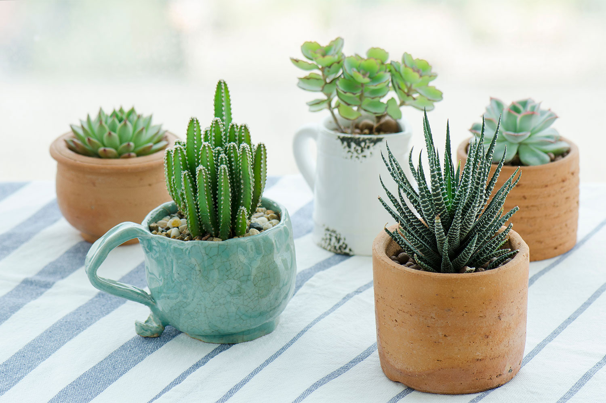
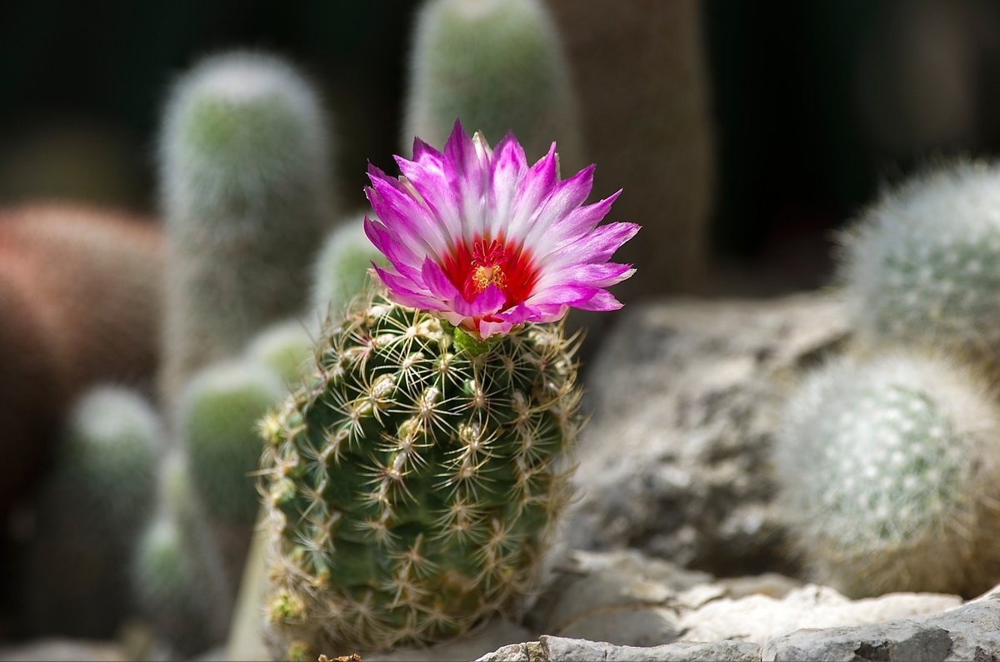

Суккуленты
Суккуленты — это растения, которые хранят воду в своих листьях, стеблях или корнях. Они прекрасно подходят для тех, кто не имеет много времени на уход за растениями. Суккуленты могут расти в различных условиях и требуют минимального ухода.

Алоэ вера — это растение не только красиво, но и полезно. Гель, содержащийся в листьях Алоэ, используется в косметологии и медицине благодаря своим заживляющим свойствам.
Кактусы — это еще одна популярная группа суккулентов. Они известны своими колючками и способностью выживать в самых суровых условиях. Кактусы могут цвести яркими цветами, что делает их привлекательными для коллекционеров.

Эхеверия — это род суккулентов, который включает множество видов с различными формами и цветами. Эти растения часто используются в декоративных композициях и как комнатные растения.
Уход за суккулентами: Уход за суккулентами включает в себя регулярный полив, но нужно помнить, что лучше недополить, чем перелить. Рекомендуется поливать их только тогда, когда верхний слой почвы полностью высохнет. Также важно обеспечить хорошую дренажную систему, чтобы избежать загнивания корней.
"Суккуленты — это не просто растения, это маленькие оазисы в нашем доме."
Суккуленты можно размножать различными способами, включая черенкование и деление куста. Это делает их отличным выбором для начинающих садоводов, которые хотят расширить свою коллекцию.
В заключение, суккуленты — это замечательные растения, которые могут украсить любой дом или сад. Их разнообразие форм и цветов позволяет каждому найти подходящий вариант для себя.